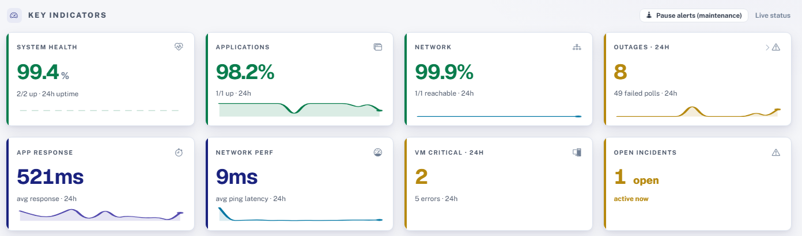

Your AI department, without the headcount.
Strategy audits, custom builds and managed AI for businesses with no AI team.
- Runs on
- Anthropic’s Claude, or your own servers when your data can’t leave the building.
- Built by
- Rob Crider, founder. The person on your call is the person who builds it.
- You own
- Everything we build. No lock-in.
Free 30-minute call
We’ll tell you whether AI is worth it for your business.
Services
-
Strategy Audit
1 weekA 90-minute working session on how your business runs, then a written report: your top three AI opportunities, what each would save, and a 90-day plan. Yours to keep either way.
-
Custom Builds
Fixed fee · 2 to 6 weeksThe workflow, agent or integration the audit points to, connected to the tools you already use: QuickBooks, HubSpot, Microsoft 365, Google Workspace. Thirty days of support after launch.
-
Managed AI
Month to monthWe keep it running: support over Slack, cost limits, and one new workflow each month. Cancel any time.
Where it runs
On Claude
Anthropic’s models, in their cloud. Fastest to set up and the most capable. Right for most businesses.
On your own servers
Open models on your hardware or private cloud. For healthcare, legal, finance and government contractors.
The audit tells you which one fits.
Wardix
Monitoring for Windows networks that runs on your own server. We build it, ship it and support it.
- Free to start
- Runs on your Windows server
- Monitoring data stays on that server

Other projects
Authwell
Prior authorization for small medical practices: case tracking, denial appeals and payer rules.
Remana
Medication reminders and a family dashboard for seniors living at home.
Wardex Operator
Agent-driven monitoring and operations.
Who you work with
Rob Crider Founder, Seafin LLC
I audit your business, write the scope and ship the build myself. No hand-off to a junior after the sale. If a project is bigger than I can handle, I’ll say so in the audit and point you to the right option, even if that isn’t us.
Questions
Do we need anyone technical on staff?
No. We set it up, train your team, and keep it running if you want us to.
Do you only work with Claude?
Mostly. We also work with ChatGPT, Gemini and open models when the job calls for it.
What does it cost?
It depends on scope. The audit and every build are fixed price, agreed before we start. You’ll have a number after the first call.